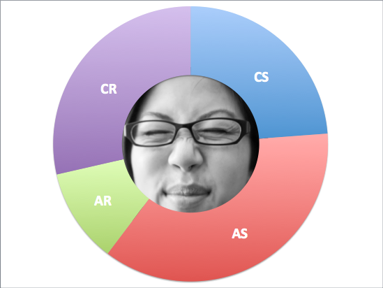
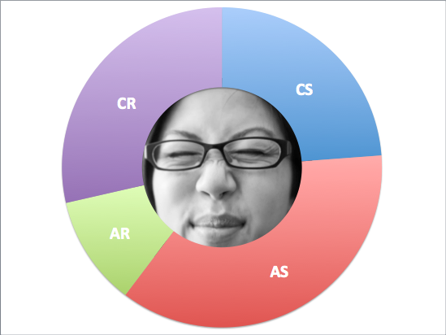

Garbage in, garbage out. Asking the right questions will get you the right answers.
It happens and how you react can improve or worsen the situation. Here's a recent situation that added stress to my life.
Values help you stay grounded so it's important to know what they are.
I didn't realize it was a thing until this post. Here are my experiences with it.
My experiences with peer pairing so far and the feedback that follows.
One of the issues that's affecting the tech world.
How I think and how I can use it to survive the rigors of DBC.
What a whirlwind introduction into DBC. My thoughts.


 
